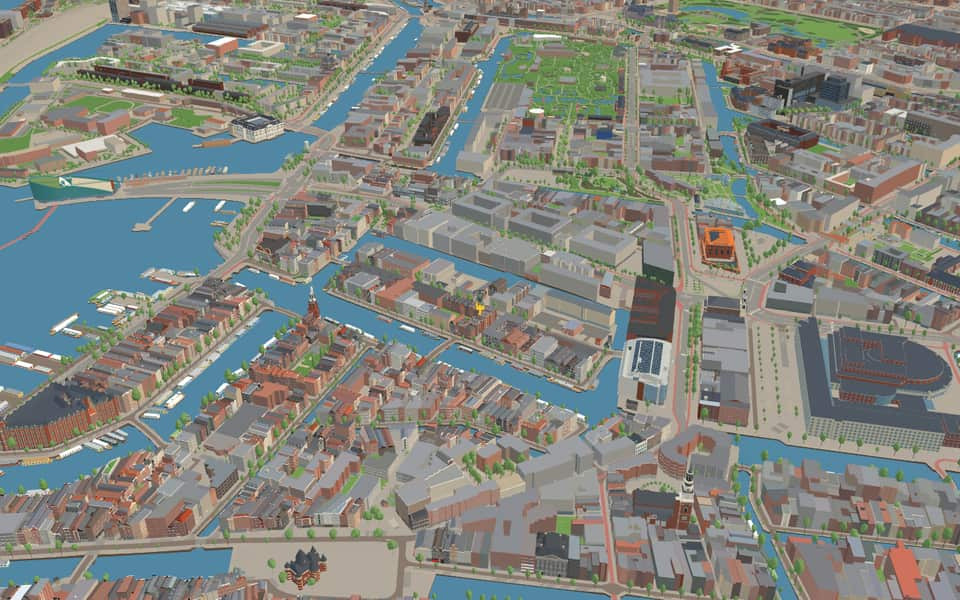
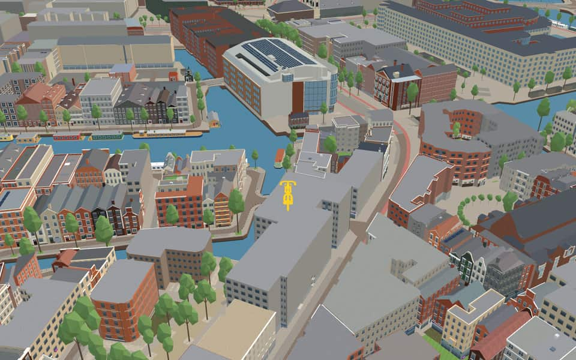
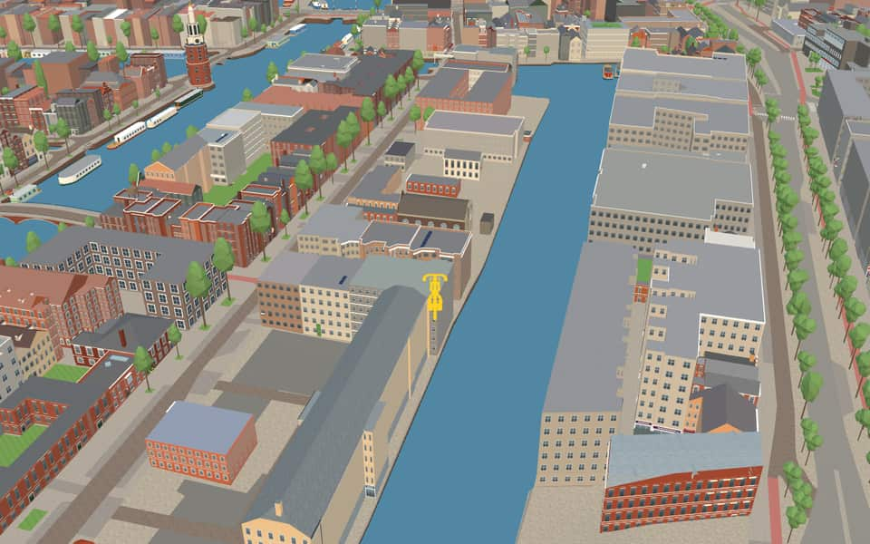
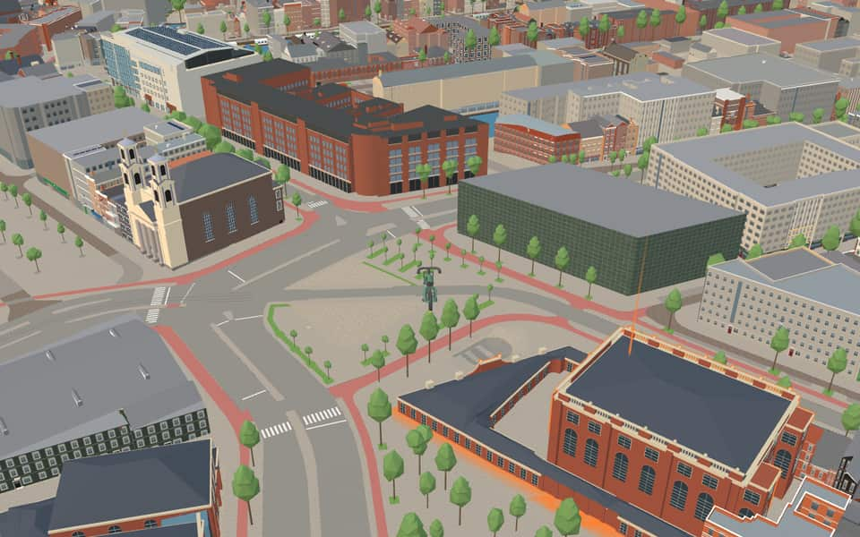

Neighbourhood in Nieuwmarkt/Lastage
Uilenburg
Uilenburg is a neighborhood of Amsterdam, Netherlands. Uilenburg is an island surrounded by the Oudeschans canal to the northwest, the Houtkopersburgwal canal to the southwest, the Uilenburgergracht to the southeast and the Rapenburgwal to the northeast. The Nieuwe Uilenburgerstraat runs along the length of the island, crossing the Houtkopersburgwal and Uilenburgergracht by bridges. en.wikipedia.org
The name. The name may come from an area here called Uylenbraeck in 1470. nl.wikipedia.org
Ride Uilenburg3 modelled buildings · 31 facts · 21 name stories


In the game
Frames from a ride through Uilenburg.




6 more photos of Uilenburg

.jpg){kind=link}


_-_2024-11-26_-_1.jpg){kind=link}


.jpg){kind=link}


Built here
Buildings modelled one by one for the ride.
Academie voor Theater en Dans
Uilenburger Synagoge
Jodenbreestraat 11 block
Did you know
Trivia the ride can show you here.
- The Uilenburger Synagogue, built in 1766 for Ashkenazi Jews, is still in use. Wikipedia (translated from Dutch)
- In 1879 the steam-driven Boas diamond works opened in the south-east corner of Uilenburg. Wikipedia (translated from Dutch)
- In its day the Boas works was the largest diamond-polishing works in Amsterdam and Europe. Wikipedia (translated from Dutch)
- In December 1593 twenty-two plots on Uilenburg were sold to shipwrights displaced by the city's expansion over the Lastage. Wikipedia (translated from Dutch)
- For centuries the Uilenburger Synagoge could only be reached through alleys to the buildings behind. Wikipedia (translated from Dutch)
- Academie voor Theater en DansThe institution merged with the Kleinkunstacademie in 2001. en.wikipedia.org
- Academie voor Theater en DansAnna Sablariolles was registered as the very first pupil. en.wikipedia.org
- Academie voor Theater en DansMaria Gartman served as one of the school's earliest instructors. en.wikipedia.org
- Academie voor Theater en DansThe institution kept the name de Theaterschool until September 2016. en.wikipedia.org
- Amsterdamse Hogeschool voor de KunstenNotable alumni include Dutch opera director Lotte de Beer and actress Carice van Houten. en.wikipedia.org
- Amsterdamse Hogeschool voor de KunstenSwedish photographer Linda-Maria Birbeck and Serbian theater director Bojan Đorđev also studied here. en.wikipedia.org
- Amsterdamse Hogeschool voor de KunstenGraphic designer Piet Zwart, who lived from 1885 to 1977, is a distinguished former student. en.wikipedia.org
- Amsterdamse Hogeschool voor de KunstenAmsterdamse Hogeschool voor de Kunsten includes the Breitner Academy, named after painter George Hendrik Breitner. en.wikipedia.org
- GrenspaalResidents in the 1970s resisted the planned highway, causing clashes with police. nl.wikipedia.org
17 more facts
- Uilenburger SynagogeAshkenazi Jews commissioned this Louis XV-style structure in 1766. nl.wikipedia.org
- Uilenburger SynagogeFor centuries, the synagogue was only accessible via corridors and stairs to rear buildings. nl.wikipedia.org
- OudeschansThe Oudeschans was originally named Nieuwe Gracht when an arm of the Amstel was dug out between 1515 and 1518. en.wikipedia.org
- OudeschansIn 1602 a lock was built to allow ships to sail from the Oudeschans to the Amstel via the Zwanenburgwal. en.wikipedia.org
- OudeschansA rumor of ghosts in 1833 earned the Oudeschans the nickname the ghost quay. en.wikipedia.org
- OudeschansNaturalist Jan Swammerdam lived at number 18, where his father ran a pharmacy with a natural history collection. en.wikipedia.org
- RapenburgwalBridge 281, known as Peperbrug, crosses the canal's center section. en.wikipedia.org
- RapenburgwalA 1737 map shows the waterway once extended further east to Markengracht. en.wikipedia.org
- RapenburgwalThe eastern extension of this canal was back-filled in 1968 during tunnel construction. en.wikipedia.org
- Recht BoomsslootThe Fa Yin Chinese Association has taught language and hosted activities for seniors at number 5 since 1978. en.wikipedia.org
- Recht BoomsslootDe Rode Leeuw dates back to 1726 among several national monuments lining this stretch. en.wikipedia.org
- JodenbreestraatRembrandt lived in a house on this street from 1639 to 1656, which still stands today. en.wikipedia.org
- JodenbreestraatA massive structure called the Maupoleum was voted Amsterdam's ugliest building before being demolished in 1994. en.wikipedia.org
- JodenbreestraatJodenbreestraat means "Jewish Broad Street" in English. en.wikipedia.org
- JodenbreestraatPhilosopher Baruch Spinoza was born where the Mozes en Aäronkerk church now stands. en.wikipedia.org
- ValkenburgerstraatA map from 1599 already showed this island, though it had almost no settlement at that time. nl.wikipedia.org
- ValkenburgerstraatAfter the war ended, Interior Forces troops stationed here to maintain order until Allies arrived. nl.wikipedia.org
Names on the map
Where the canal, bridge and street names come from.
Canals and water
- OudeschansA schans is an earthen rampart, and the Oudeschans was built as such around 1516 for defence against the Guelders. The rampart itself has long gone, but the water and quay have kept the name. The addition 'Oude' (old) was probably given when a new rampart was built around the enlarged city in the following century.
- RapenburgwalOriginally the name of the island bounded by the IJ (now the Oosterdok), the Oudeschans, the Rapenburgwal and the Schippersgrachtje. The main street took the island's name. The origin of the name is unknown (no explanation has been found for the Leiden Rapenburg either).
- Recht BoomsslootThe sixteenth-century master shipbuilder Cornelis Pietersz Boom. To connect his yard on the Lastage with the surrounding water he had a canal and a side canal dug, which were then named after him.
- UilenburgergrachtThe island of Uilenburg, which came within the city in 1593 together with the islands of Rapenburg and Marken. The origin of the name Uilenburg is not known for certain, but it probably comes from the marshland here, called the Uylenbraeck in 1470. The Nieuwe Uilenburgerstraat was formed by joining the Uilenburgerstraat and the Batavierstraat.
Bridges
- Sint AntoniesluisBridge 287: a concrete bridge for road traffic, dated 1969 in the city's bridge register.
Streets
- Anne FrankstraatAnne Frank, born to Jewish parents in 1929, was in hiding from 1942 to 1944 with her parents and other members of her family in the building at Prinsengracht 263, where she kept a diary. In 1944 the German occupiers discovered the family and deported them. Anne Frank died of illness and exhaustion in 1945 in the Bergen-Belsen concentration camp.
- HoutkopersburgwalNamed after the many timber merchants (houtkopers) and their yards that settled along this water in the seventeenth century. Until 1878 the cross street was called Vlooienburgsteeg.
- HoutkopersdwarsstraatNamed after the many timber merchants (houtkopers) and their yards that settled along this water in the seventeenth century. Until 1878 the cross street was called Vlooienburgsteeg.
- IJ-tunnelThe road through the tunnel under the IJ, opened on 30 October 1968.
- JodenbreestraatThis street, laid out on part of the Sint Antoniesdijk, was part of the Sint Antoniesbreestraat until the second half of the seventeenth century. At that time the Jewish population began to grow considerably, and this part of the Breestraat became the main street of the 'Jodenbuurt' (Jewish quarter). From then on the name Jodenbreestraat came into use. After the occupiers had deported the Jewish residents in the war years 1940-1945, and much of the odd-numbered side had been demolished (and burnt in stoves), the rest of that row of façades was demolished in the 1960s.
- KeizersbrugIt takes its name from the nearby Keizersstraat.
- Korte KoningsstraatThe streets lie on the old Lastage and were laid out at the end of the sixteenth century.
- Nieuwe BatavierstraatThe name is thought to come from a gable stone or shop sign in the former Batavierstraat. Batavier is most probably a corruption of Batavia. The Nieuwe Batavierstraat was created when the island of Uilenburg was rebuilt.
- Nieuwe UilenburgerstraatThe island of Uilenburg, which came within the city in 1593 together with the islands of Rapenburg and Marken. The origin of the name Uilenburg is not known for certain, but it probably comes from the marshland here, called the Uylenbraeck in 1470. The Nieuwe Uilenburgerstraat was formed by joining the Uilenburgerstraat and the Batavierstraat.
- NieuwegrachtjeIn the early nineteenth century a public street was laid out on the former timber rampart along the Rapenburgergracht, and it was named 't Nieuwe grachtje (the new little canal).
- OostersekadeThe origin of this name is unknown. Since the description 'east side of the Oudeschans' also occurs, the explanation may be that Oosterse was used for eastern. (The Oosterkerk was also called the Oosterse kerk.) Another suggestion is that there may have been a mooring here for ships in the Baltic (Oosterse) trade (compare the Texelse kade and the Gelderse kade).
- OudeschansA schans is an earthen rampart, and the Oudeschans was built as such around 1516 for defence against the Guelders. The rampart itself has long gone, but the water and quay have kept the name. The addition 'Oude' (old) was probably given when a new rampart was built around the enlarged city in the following century.
5 more streets with a story
- PeperstraatAfter the Peperwerf (pepper yard), which lay where the Peperstraat is now and belonged to the warehouses of the Dutch East India Company, where imported spices among other things were stored.
- Sint AntoniesluisNamed after the Sint Antoniesdijk, the sea dike outside the city until the seventeenth century, which in turn took its name from the St Anthony's hospital or leper house. Before 1976 the Sint Antoniesluis was part of the Zwanenburgwal.
- UilenburgersteegThe island of Uilenburg, which came within the city in 1593 together with the islands of Rapenburg and Marken. The origin of the name Uilenburg is not known for certain, but it probably comes from the marshland here, called the Uylenbraeck in 1470. The Nieuwe Uilenburgerstraat was formed by joining the Uilenburgerstraat and the Batavierstraat.
- UilenburgerwerfThe island of Uilenburg, which came within the city in 1593 together with the islands of Rapenburg and Marken. The origin of the name Uilenburg is not known for certain, but it probably comes from the marshland here, called the Uylenbraeck in 1470. The Nieuwe Uilenburgerstraat was formed by joining the Uilenburgerstraat and the Batavierstraat.
- ValkenburgerstraatThe island of Valkenburg or Marken, which came within the city around 1600. The origin of the name Valkenburg is unknown; perhaps there was once a house with a gable stone or a shipyard of that name. A gable stone with Valkenburg is also found elsewhere (Nieuwendijk 62/68).